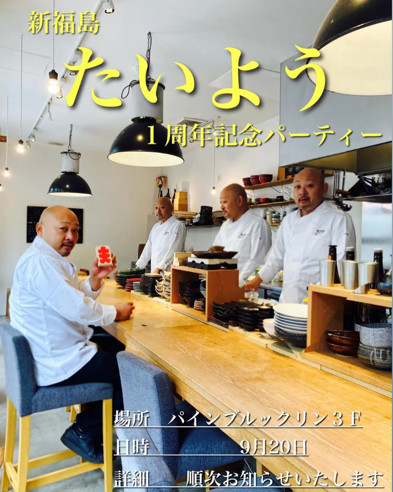
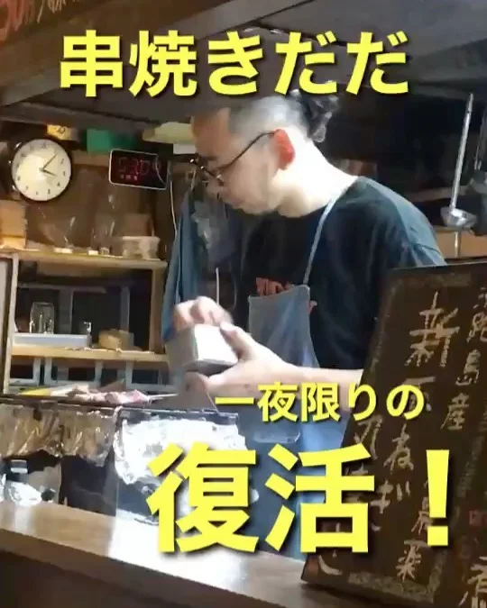
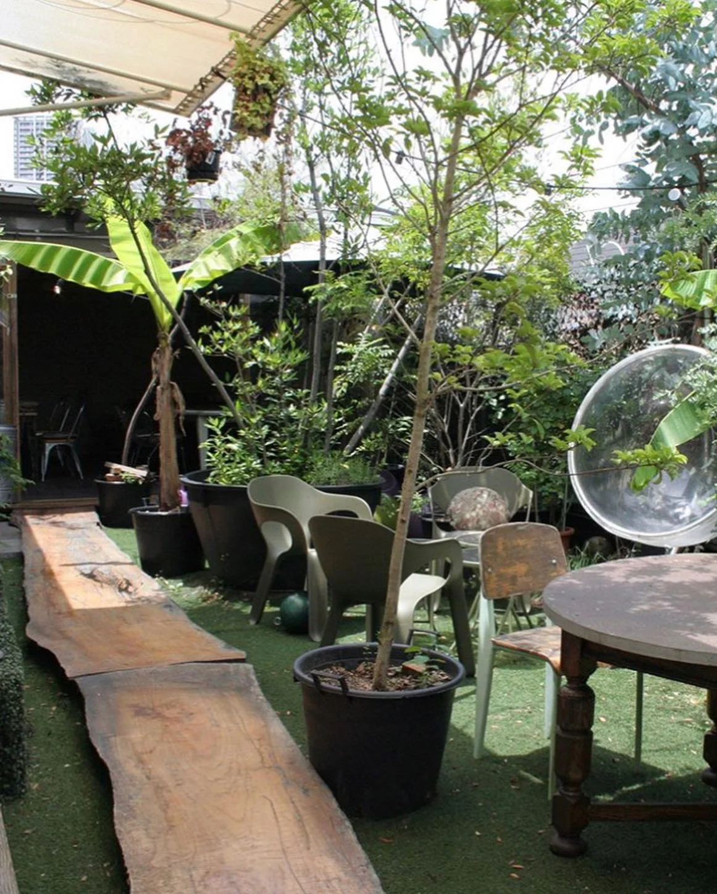
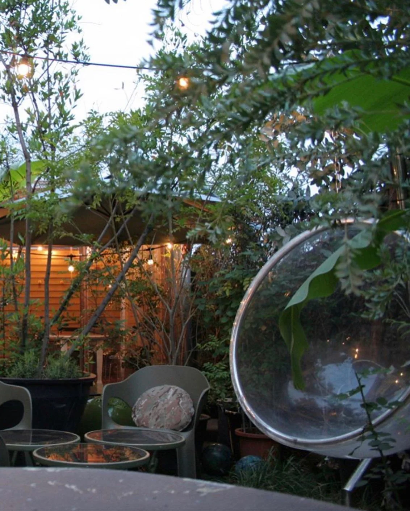
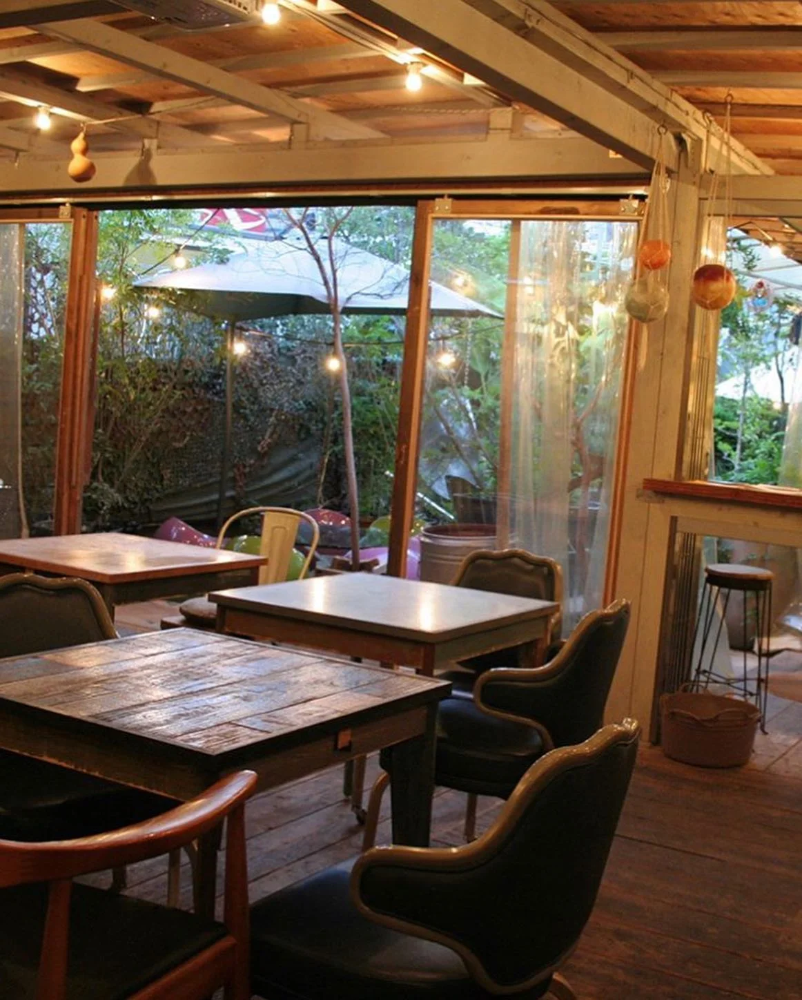
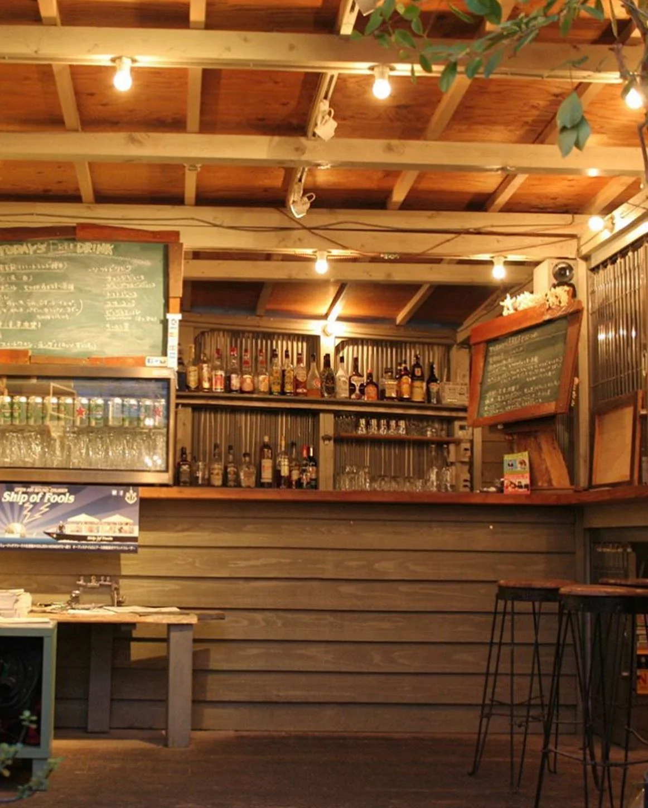

2020年9月11日
9月20日にパインブルックリンの屋上でイベントします！！






9月20日にパインブルックリンの屋上でイベントします！！ ●『新福島たいよう』一周記念パーティー。当日限定メニューでおもてなし！ ●野田の名店『串焼き だだ』一夜限りの復活！！もちろん串焼きも復活！ ●サケノケモノの黒部さんがカレーを振る舞います！ ●たいようさんが有馬のシウマイに合うポン酢を開発！初お披露目！ 有馬店主二見はDJ！ アンドモアー 何店舗かの合同イベントです！ お店を知らない方でも楽しめるイベントですのでぜひとも夏の締めくくりをみんなで楽しみましょう！ 屋上なのでコロナ対策も万全！？ ご来店の方は各店舗までインスタDMお待ちしてまーす！！ 日にち:9月20日 時間:15：00〜21:00 料金:3,000円・予定（料理、ワンドリンク付き） 料金決まってなくてすみません🙇♂️かなりお得な内容になる事は間違し！料理、他の詳細は決まり次第、随時アップします！ #中華バル#中華#中華料理#福島グルメ#路地裏#B級グルメ#中国#チャイニーズ#路地裏チャイニーズ有馬#有馬#シュウマイ#餃子#点心#フォローミー#followme#summer